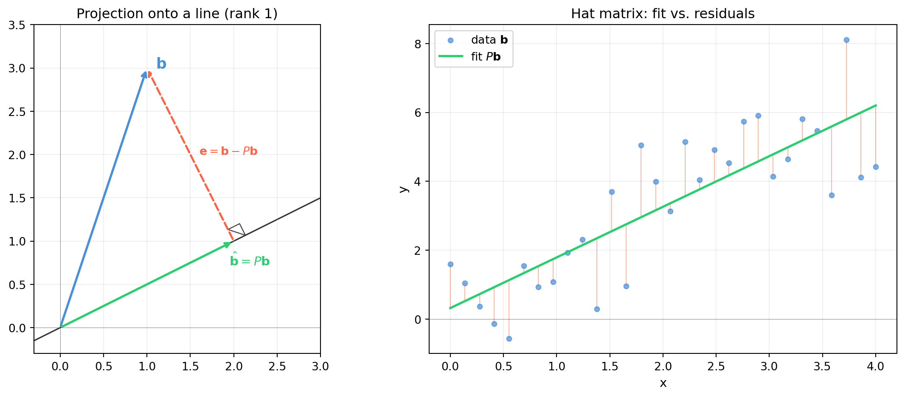

import numpy as np
import matplotlib.pyplot as plt
import matplotlib.patches as mpatches
from matplotlib.patches import FancyArrowPatch
rng = np.random.default_rng(17)
fig, axes = plt.subplots(1, 2, figsize=(12, 5))
# --- Left: projection in 2D onto a line ---
ax = axes[0]
a = np.array([2.0, 1.0]) # shape (2,) -- column direction
b = np.array([1.0, 3.0]) # shape (2,) -- vector to project
P1 = np.outer(a, a) / float(a @ a) # shape (2, 2) -- rank-1 projector
b_hat = P1 @ b # shape (2,) -- projection
e = b - b_hat # shape (2,) -- error (orthogonal to a)
# Line through origin along a
t = np.linspace(-0.5, 2.2, 100)
ax.plot(t * a[0], t * a[1], color='#333333', lw=1.2, zorder=1, label='Col(A)')
ax.annotate('', xy=b, xytext=np.array([0, 0]),
arrowprops=dict(arrowstyle='->', color='#4a90d9', lw=2))
ax.annotate('', xy=b_hat, xytext=np.array([0, 0]),
arrowprops=dict(arrowstyle='->', color='#2ecc71', lw=2))
ax.annotate('', xy=b, xytext=b_hat,
arrowprops=dict(arrowstyle='->', color='tomato', lw=1.8, linestyle='dashed'))
# right-angle mark at b_hat
s = 0.15
v1 = a / np.linalg.norm(a)
v2 = e / np.linalg.norm(e)
corner = b_hat + s * (v1 + v2)
sq = plt.Polygon([b_hat + s * v1, corner, b_hat + s * v2],
fill=False, edgecolor='#333333', lw=0.8)
ax.add_patch(sq)
ax.text(b[0] + 0.1, b[1], r'$\mathbf{b}$', fontsize=13, color='#4a90d9')
ax.text(b_hat[0] - 0.05, b_hat[1] - 0.28, r'$\hat{\mathbf{b}} = P\mathbf{b}$',
fontsize=11, color='#2ecc71')
ax.text((b[0] + b_hat[0]) / 2 + 0.1, (b[1] + b_hat[1]) / 2,
r'$\mathbf{e} = \mathbf{b} - P\mathbf{b}$', fontsize=10, color='tomato')
ax.set_xlim(-0.3, 3.0)
ax.set_ylim(-0.3, 3.5)
ax.axhline(0, color='#333333', lw=0.4, alpha=0.5)
ax.axvline(0, color='#333333', lw=0.4, alpha=0.5)
ax.set_aspect('equal')
ax.set_title('Projection onto a line (rank 1)', fontsize=12)
ax.grid(alpha=0.2)
# --- Right: hat matrix diagnostics ---
ax2 = axes[1]
m, n = 30, 2 # overdetermined system
A = np.column_stack([np.ones(m),
np.linspace(0, 4, m)]) # shape (30, 2) -- design matrix
b_vec = 1.5 * A[:, 1] + 0.5 + rng.standard_normal(m) # shape (30,) -- noisy data
P2 = A @ np.linalg.solve(A.T @ A, A.T) # shape (30, 30)
b_hat2 = P2 @ b_vec # shape (30,)
e2 = b_vec - b_hat2 # shape (30,)
x_vals = A[:, 1]
ax2.scatter(x_vals, b_vec, s=18, color='#4a90d9', alpha=0.7, label=r'data $\mathbf{b}$', zorder=3)
ax2.plot(x_vals, b_hat2, color='#2ecc71', lw=2, label=r'fit $P\mathbf{b}$', zorder=4)
for xi, yi, yhi in zip(x_vals, b_vec, b_hat2):
ax2.plot([xi, xi], [yi, yhi], color='tomato', lw=0.7, alpha=0.5)
ax2.set_xlabel('x', fontsize=11)
ax2.set_ylabel('y', fontsize=11)
ax2.set_title('Hat matrix: fit vs. residuals', fontsize=12)
ax2.legend(fontsize=10)
ax2.grid(alpha=0.2)
ax2.axhline(0, color='#333333', lw=0.4, alpha=0.5)
fig.tight_layout()
plt.savefig('ch17-least-squares/fig-projection.png', dpi=150, bbox_inches='tight')
plt.show()
print(f"P symmetric: {np.allclose(P2, P2.T)}")
print(f"P idempotent: {np.allclose(P2 @ P2, P2)}")
print(f"rank(P): {np.linalg.matrix_rank(P2)} (should be {n})")
print(f"e orthogonal to Col(A): max |A^T e| = {np.abs(A.T @ e2).max():.2e}")
P symmetric: True
P idempotent: True
rank(P): 2 (should be 2)
e orthogonal to Col(A): max |A^T e| = 6.66e-15